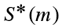
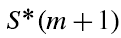

| Flexible Statistics Data Analysis Toolbox™ |
|
Plot minimum Mahalanobis distance among the units which do not belong to the subset in each step of the forward search.
mmdplot(out)
mmdplot(out,param1,val1,param2,val2,...)
mmdplot(out) plots the trajectory of minimum Mahalanobis distance among the observations not belonging to the subset. In the forward search we start with a subset of m0 observations which grows in size during the search. When a subset  of m observations is used in fitting we order the squared distances and take the observations corresponding to the m+1 smallest as the new subset . Usually this process augments the subset by one observation, but sometimes two or more observations enter as one or more leave.
To detect outliers all methods compare selected Mahalanobis distances with a threshold. We examine the minimum Mahalanobis distance among observations that are not in the subset:

If this ordered observation is an outlier relative to the other m observations, this distance will be ‘large’ compared with the maximum Mahalanobis distance of observations in the subset. To calibrate the forward search and so to provide an objective basis for decisions about the number of outliers in a sample we also plot the reference bands of dmin(m) in the forward search
mmdplot(out) needs as input the following information
mmd − a matrix containing the monitoring of minimum MD in each step of the forward search. The first column of mmd must contain the fwd search index
mdrplot(out,param1,val1,param2,val2,...) specifies one or more of the name/value pairs described in the following table.
| Parameter | Value |
|---|---|
| 'quant' |
Vector containing quantiles for which envelopes have to be computed. The default is to produce 1%, 50% and 99% envelopes. In other words the default is quant=[0.01;0.5;0.99]; |
| 'exact' |
Scalar, if it is equal to 1 the calculation of the quantiles of the T and F distribution is based on functions finv and tinv from the Matlab statistics toolbox, otherwise the calculations of the former quantiles is based on functions invcdff and invcdft. The solution has a tolerance of 1e-8 (change variable tol in files invcdff.m and invcdft.m if required. Remark: the use of functions tinv and finv is more precise but requires more time. The default value of exact is 0 (approximate solution). |
| 'sign' |
Scalar. If it is equal 1 (default) we distinguish steps for which minimum deletion residual was associated with positive or negative value of the residual. Steps associated with positive values of mdr are plotted in black, while other steps are plotted in red |
| 'mplus1' |
Scalar, which specifies if it is necessary to plot the curve associated with (m+1)th order statistic |
| 'envm' |
Scalar which specifies the size of the sample which is used to superimpose the envelope. The default is to add an envelope based on all the observations (size n envelope). |
| 'xlimx' |
Vector with two elements controlling minimum and maximum on the x axis. Default value is mdr(1,1)-3 and mdr(end,1)*1.1. |
| 'ylimy' |
Vector with two elements controlling minimum and maximum on the x axis. Default value is min(mdr(:,2)) and max(mdr(:,2))*1.1; |
| 'lwd' |
Scalar which controls line width of the curves which contain the score test. Default value is width=2. |
| 'lwdenv' |
Scalar which controls the width of the lines associated with the envelopes. Default is lwdenv=1 |
| 'FontSize' |
Scalar which controls the font size of the labels of the axes. Default value is 12. |
| 'SizeAxesNum' |
Scalar which controls the size of the numbers of the axes. Default value is 10. |
| 'titl' |
A label for the title (default: '') |
| 'labx' |
A label for the x-axis (default: 'Subset size m') |
| 'laby' |
A label for the y-axis (default: 'Minimum deletion residual') |
| 'tag' |
String which identifies the handle of the plot which is about to be created. The default is to use tag 'pl_mdr'. Notice that if the program finds a plot which has a tag equal to the one specified by the user, then the output of the new plot overwrites the existing one in the same window else a new window is created |
| 'datatooltip' |
Empty value or structure. The default is datatooltip='' If datatooltip is not empty the user can use the mouse in order to have information about the unit selected, the step in which the unit enters the search and the associated label If datatooltip is a structure, it is possible to control the aspect of the data cursor (see function datacursormode for more details or the examples below). The default options of the structure are DisplayStyle='Window' and SnapToDataVertex='on' |
| 'label' | Cell containing the labels of the units (optional argument used when datatooltip=1. If this field is not present labels row1, ..., rown will be automatically created and included in the pop up datatooltip window) |
| 'databrush' |
The core of this option is selectdataFS, a function used by all graphic tools of the FSDA toolbox. A separate common page details all databrush options. |
| 'nameX' |
cell array of strings of length p containing the labels of the variables of the regression dataset. If it is empty (default) the sequence X1, ..., Xp will be created automatically.. |
| 'namey' | character containing the label of the response. |
| 'lwd' | Scalar which controls line width of the curves which contain the score test. Default line width=2. |
| 'FontSize' | Scalar which controls the font size of the labels of the axes. Default value is 12. |
| 'SizeAxesNum' | Scalar which controls the size of the numbers of the axes. Default value is 10. |
| 'titl' | A label for the title (default: ''). |
| 'labx' | A label for the x-axis (default: 'Subset size m') |
| 'laby' | A label for the y-axis (default: 'Minimum deletion residual'). |
In this first example we use the same set of simulated data in web page resindexplot in order to compare the output which comes out from the mdrplot and that which derives from the plot of robust re
|
|
mixsimreg.html | mmmult.html |
|